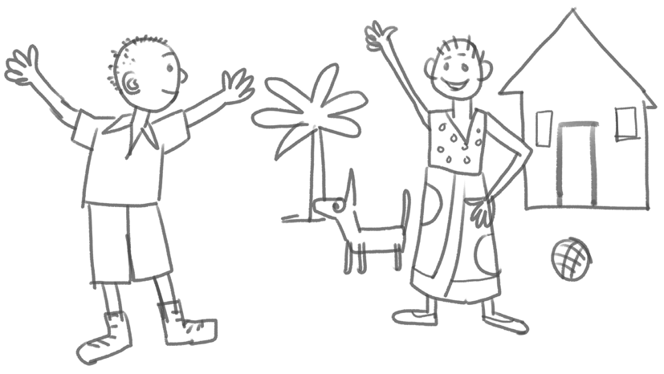

Picture drawing is an art of making pictures using traditional or digital tools. Some of the traditional tools include pencils, crayons, chalk, brushes, and paints. Traditional tools are also obtained in digital form.
Drawing pictures using pencils
Beginners can draw pictures using pencils freely without using a ruler or other measurements. Figure 1 shows a picture drawn freely using a pencil.

Figure 1: An example of a picture drawn freely using a pencil